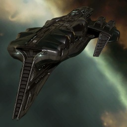

Talos

Тип корабля: Линейный крейсер
Государство/Организация: Gallente
Примерная стоимость: 67.100.000 ISK
Описание
История «Талоса» начинается в 110 году юлайской эры. Тогда он был ранним прототипом на конструкторских столах Окраинной Рудной Экспедиции. Изначально корабль задумывался как патрульное судно для участия в операциях по добыче руды в областях космоса с нулевой степенью соответствия нормам КОНКОРДа. Он был бы окончательно заброшен и забыт, если бы проект не подхватили Чёрные Орлы, отряд для спецопераций галлентского правительства Чёрные Орлы устранили из проекта «Талос» все второстепенные системы и оснастили его крупнокалиберным вооружением, создав быстрый ударный корабль, который идеально подходит для ведения партизанской войны.
Проект «Талос» оставался военной тайной до 113 года по юлайскому летоисчислению, после чего он был поставлен на вооружение в качестве линейного крейсера третьего поколения. На сегодняшний день производство «талосов» ведёт корпорация «Лаборатории Дюволь». Они изменили первоначальный проект Окраинной Рудной Экспедиции, приведя его в соответствие с галлентскими стандартами.
Характеристики
Корпус
Запас прочности корпуса: 2.180 ед.
Вместимость грузового отсека: 600 м^3
Объем отсека для дронов: 25 м^3
Пропускная способность канала телеуправления: 25 Мбит/с
Масса: 15.552.000 кг
Занимает объем: 270.000,0 м^3 (15.000,0 м^3 в разобранном виде)
Влияние инертности конструкции: 0,45x
Сопротивление корпуса ЭМ-урону: 33 %
Сопротивление корпуса термальному урону: 33 %
Сопротивление корпуса кинетическому урону: 33 %
Сопротивление корпуса фугасному урону: 33 %
Броня
Запас прочности брони: 1.890 ед.
Сопротивление брони ЭМ-урону: 50 %
Сопротивление брони термальному урону: 35 %
Сопротивление брони кинетическому урону: 35 %
Сопротивление брони фугасному урону: 10 %
Щит
Запас прочности щита: 1.750 ед.
Влияние на время регенерации щитов: 23 минут и 20 секунд
Сопротивление щита ЭМ-урону: 0 %
Сопротивление щита термальному урону: 20 %
Сопротивление щита кинетическому урону: 40 %
Сопротивление щита фугасному урону: 50 %
Сопротивление средствам РЭП
Сопротивление накопителя нейтрализирующему воздействию: 0 %
Сопротивление воздействию генератору стазис-поля: 0 %
Сопротивление воздействию помех на наводку вооружения: 0 %
Накопитель энергии
Емкость накопителя: 3.100,0 ГДж
Время востановления заряда: 12 минут и 54 секунд
Целеуказания
Максимальная дальность захвата цели: 70 км
Максимальное количество захваченных целей: 7
Радиус сигнатуры: 220 м
Разрешающая способность систем захвата цели: 210 мм
Эффективность радарной системы: -
Эффективность магнитнометрической системы: 20 ед.
Эффективность гравиметрической системы: -
Эффективность ладарной системы: -
Двигательная установка
Максимальная скорость: 220 м/с
Скорость в варп-режиме: 3,5 а.е./с.
Служба оснащения
Мощность ЦПУ: 360,0 Тф
Мощность реактора: 1.100 МВт
Калибровка: 400 ед.
Точки монтажа орудийных установок: 8
Точки монтажа пусковых установок: -
Разъемы большой мощности: 8
Разъемы средней мощности: 4
Разъемы малой мощности: 5
Разъемы под установку тюнинг-модулей: 3